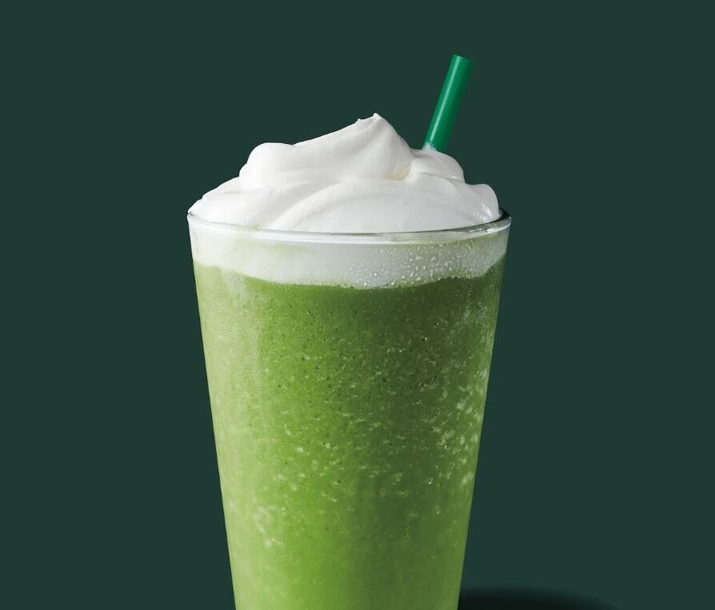

5. tall Caffè Americano with extra shots
I often brought it when I stayed up late the night before because it helps me
reduce the puffiness on my face and makes me stay awake in class.

I often brought it when I stayed up late the night before because it helps me
reduce the puffiness on my face and makes me stay awake in class.
It's just a nice hot drink to have in the winter.

I am someone who loves sweet things.
Therefore a caramel brulee latte would definitely bring my mood up :).

I just can't think of a reason why someone wouldn't like this.
(p.s.if you order a grande frappuccino and ask them to put it in a venti cup, you will get the same amount of drink but with half a cup of cream on top ;)
This is just my all time favorite. MATCHA NO.1
(I recently discovered a new way for ordering this:
light iced+soy milk+salted cream in a venti cup.
The salted cream is soul.
LOVED IT)